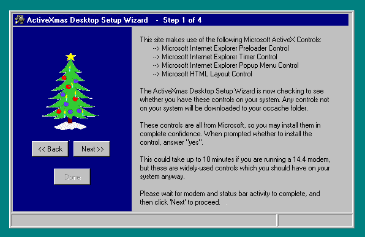
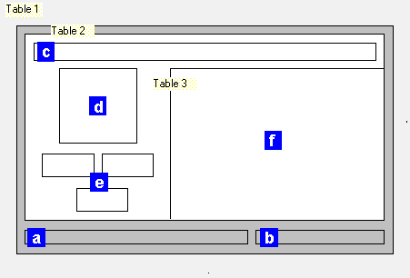
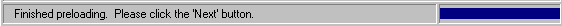
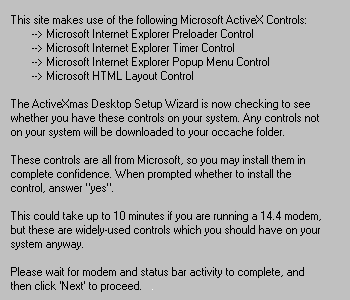
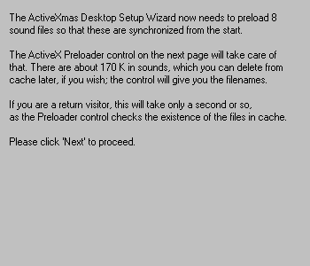
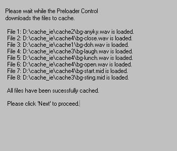
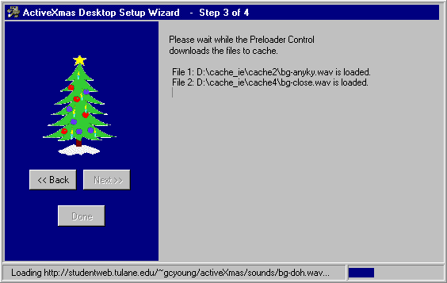
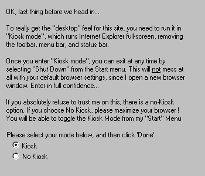

|
| ||
|
| ||
George Young
Tulane University
February 27, 1997
Contents
Introduction
The ActiveXmas Setup Wizard
Structure
Creating the Main Container Document with a Floating Frame
Building the Structure with Nested Tables
Creating the Title Bar
Adding and Preloading Graphics
Adding the Navigation Buttons Using ActiveX Controls
Adding the Dynamic Content Using a Floating Frame
Adding the Status Bar Controls
Hiding the Controls Until They're Loaded
Adding Scripting to Update the Status and Title Bars
Adding Scripting for the Navigation Buttons
The Four Dynamic Content Subdocuments
Appendix 1. Code Listing for ip-setup.htm
Appendix 2. Code Listing for ip-set_0.htm
Appendix 3. Code Listing for ip-set_1.htm
Appendix 4. Code Listing for ip-set_2.htm
Appendix 5. Code Listing for ip-set_3.htm
Appendix 6. Code Listing for ip-set_4.htm
Appendix 7. Code Listing for ax-setks.alx
About the author
About the contest
Last fall I had the opportunity to see the alpha version of Microsoft® Internet Explorer 4.0; a gentleman next to me on a flight had loaded Internet Explorer 4.0 on his notebook computer. Most interesting was how the Active Desktop feature of this new version allowed live HTML pages to be loaded right in the Windows® Desktop Wallpaper. Being familiar with ActiveX™ and the Microsoft Visual Basic® Scripting Edition (VBScript), I became curious about how much of this new Active Desktop functionality could be replicated, at least in part, using Internet Explorer 3.0 and its associated technologies.
This initial curiosity led me to combine HTML, VBScript, Microsoft ActiveX controls, and a smattering of Perl to develop what became the ActiveXmas Desktop site  , my entry in the eXplore Xmas contest organized on the IE-HTML mailing list. For those unfamiliar with the IE-HTML list, it is one of a number of technical mailing lists started by Microsoft around the time that Internet Explorer 3.0 was released. The list is an outstanding resource for site designers and is made up of talented and generous people such as the contest's second-prize co-winners, John Nicholson and Wayne Ruehling, who willingly share their vast knowledge of scripting and HTML issues and help list members with problem solving.
, my entry in the eXplore Xmas contest organized on the IE-HTML mailing list. For those unfamiliar with the IE-HTML list, it is one of a number of technical mailing lists started by Microsoft around the time that Internet Explorer 3.0 was released. The list is an outstanding resource for site designers and is made up of talented and generous people such as the contest's second-prize co-winners, John Nicholson and Wayne Ruehling, who willingly share their vast knowledge of scripting and HTML issues and help list members with problem solving.
The ActiveXmas Desktop Web site, which ultimately won first prize in the eXplore Xmas contest, eventually grew to include a browser; an e-mail program; a Windows-like explorer, desktop news, start menu, taskbar, and system tray; a setup wizard; and clickable desktop icons. To some degree, the site looks and acts just like a Windows 95 desktop with Active desktop features.
As part of making the ActiveXmas Desktop site as close to the "real thing" as possible, I wanted to mimic the Windows 95 event-driven sounds that play immediately upon event occurrence. For example, I wanted an "open" sound to play immediately when one of the site's "windows" was opened, and another sound to play when the window was closed. In order to achieve this immediacy, I needed to have the sounds already loaded in the user's cache when the event occurred for the first time.
Microsoft provides an ActiveX control for just this purpose -- the Preloader control. The Preloader control downloads to the user's cache any file or files that the Web site designer would like to have immediately available on subsequent pages. The normal use of the control is to have it work transparently on a page, so the user has no idea that the files are being preloaded. As I began to play with the control and see it in action, however, I realized that I could use it more overtly, imitating a setup wizard and at the same time providing an interesting look at the control in action.
In addition to having the Preloader control load eight sound files to cache, I wanted to be sure the user had the necessary ActiveX controls loaded on his or her system before entering the main site. I wanted to have the features making use of these controls load quickly, without the user having to wait for the entire control to download.
I also wanted to give the user the option of entering the main site either in Kiosk (or full-screen) mode, as recommended, or in normal mode. Kiosk mode hides all browser-navigation tools and fills the entire monitor window with the HTML page. This mode is critical to the desktop-like appearance of the site, but I wanted to describe the mode and offer the user a choice.
Wanting the site to look like a Windows 95 desktop meant having a "window," like the one below, float on top of the HTML page.

Figure 1. The ActiveXmas desktop setup wizard
The setup wizard leads the user through four steps that preload sound files and ActiveX controls and allow the user to choose to enter the site in Kiosk mode. The wizard was developed using the following technologies:
The ActiveXmas setup wizard is composed of six HTML documents.
Table 1. ActiveXmas HTML documents
| File Name | Purpose |
| ip-setup.htm | Main container document for the setup wizard |
| ip-set_0.htm | Setup wizard static content page |
| ip-set_1.htm | First dynamic-content page (checks for ActiveX controls) |
| ip-set_2.htm | Second dynamic-content page (introduces Preloader control) |
| ip-set_3.htm | Third dynamic-content page (runs Preloader control for eight files) |
| ip-set_4.htm | Fourth dynamic-content page (presents Kiosk mode option) |
IP-SETUP.HTM (see full code listing in Appendix 1)
This main container document contains a floating frame, which loads IP-SET_0.HTM for Internet Explorer 3.0 users only, and a <noframes> section for non-Internet Explorer 3.0 users. The floating frame has its HEIGHT and WIDTH attributes set to 100 percent to fill the browser window, and loads IP-SET_0.HTM as follows:
<iframe frameborder=0 scrolling=1 width=100% height=100% src=ip-set_0.htm > </iframe>
Also on this container page is a VBScript variable that is used to indicate whether the necessary ActiveX controls are loaded on the user's system. This variable, blnControlsLoaded, is initially set to "0," indicating that the controls are not loaded.
Dim blnControlsLoaded blnControlsLoaded = "0"
IP-SET_0.HTM (see full code listing in Appendix 2)
This static-content page contains the structure of the setup wizard as well as that content visible throughout the user's navigation through the four dynamic-content pages. This structure is set within three nested tables that serve the following purposes:

Figure 2. ActiveXmas setup wizard structure
Table 1 has its HEIGHT and WIDTH attributes set to 100 percent and contains just one cell whose ALIGN and VALIGN attributes are set to center and middle, respectively. This forces the nested Tables 2 and 3 to center themselves in the browser window, no matter how the user sizes the browser window.
<table height=100% width=100% cellspacing=0 cellpadding=0> <tr><td align=center valign=middle>
Nested within Table 1 is Table 2, whose sole purpose is to give a 3-D border effect to the setup wizard. Table 2 has its HEIGHT attribute set to 350 pixels, in an effort to accommodate lower screen resolutions, and its BGCOLOR attribute set to silver, as follows:
<table height=350 border=1 bgcolor=silver
cellspacing=2 cellpadding=0 align=center valign=middle>
The BGCOLOR setting, combined with a BORDER of 1 pixel and CELLSPACING of 2 pixels gives the desired application border effect.
Finally, nested within Table 2 are three objects: Table 3, a TextBox control, and an Image control.
Table 3, the innermost of the three nested tables in IP-SET_0.HTM, contains three cells -- a top cell spanning two columns and containing the setup wizard's "title bar"; a lower-left cell containing the logo image and navigation buttons, as well as eight images to be loaded; and a lower right cell containing a floating frame. Table 3 has its WIDTH attribute set to 550, a BORDER of 0 pixels, and a BGCOLOR of silver, as follows:
<table border=0 width=550 bgcolor=silver>
The top cell containing the title bar has its background color set to navy, again to imitate a real setup wizard. In this cell, a small icon, IT-SETUP.GIF, is loaded, as is the title bar TextBox control, named txtTitle. This control will be updated with each page that loads in the floating frame.
<tr><td colspan=2 bgcolor=navy> <img height=16 width=222 src="images/it-setup.gif">
In the lower-left cell, the ActiveXmas setup wizard logo image, IG-TREE3.GIF, is loaded. In addition, I load nine images that will eventually be loaded into the status-bar image control in conjunction with the Preloader control. The images are navy-colored boxes 11 pixels in height that represent the percentage of the eight files that have been preloaded, with each eighth represented by 15 pixels. The names of the graphic files are IS-08.GIF (for zero files loaded) through IS-88.GIF (for all eight files loaded).
These small images are invisibly loaded when the user first sees the setup wizard, so they will be instantly available from cache to the Preloader page (IP-SET_3.HTM), which ensures they will load properly in the status bar area.
Below the eight status-bar images, the three navigation buttons are placed in the cell. These buttons, ActiveX CommandButton controls, represent the "Back," "Next," and "Done" buttons seen in many setup wizards, and are named cmdBack, cmdNext, and cmdDone.
In the lower-right cell of Table 3, the floating frame that contains the subdocuments is loaded, as follows:
</td><td align=left valign=top width=350>
<iframe name="ifrBody"
frameborder=0 scrolling=1
height=300 width=350
src=ip-set_1.htm
>
</iframe>
</td></tr>

Table 3 is then closed, and all that remains is the status bar area at the bottom of Table 2. This area consists of two cells; the left cell contains a TextBox control named txtStatus, which will provide information on the files being loaded by the Preloader page; the right cell contains an Image control named imgStatus, into which the above-mentioned eight images will be progressively loaded as the Preloader control loads the eight files to cache.
As is indicated in Figure 1, the first subdocument loaded into the floating frame tells the user about the ActiveX controls used on the site. In addition, this page contains an invisible instance of each of these controls, ensuring that they will load before the user reaches the main site, much as a setup wizard loads necessary DLLs before allowing the application to run.
However, the main page containing the IFRAME uses CommandButton, Textbox, and Image controls, which are part of the HTML Layout control. If the user doesn't have the Layout control loaded, the explanation in the IFRAME isn't visible, because IFRAMES don't load until the container document is loaded. This defeats the purpose of the explanatory page.
Editor's note, September 4, 1997: The HTML Layout Control technology, orginally released with Internet Explorer 3.0, is now natively supported by Internet Explorer 4.0.
To get around this problem, I hide the controls on the main page using an IF…THEN statement, which refers to the blnControlsLoaded variable dimensioned in the container page IP-SETUP.HTM:
<script language="VBScript">
<!--
If top.blnControlsLoaded = "1" Then
document.writeln " <OBJECT ID='txtTitle' WIDTH=247 HEIGHT=17 "
document.writeln " CLASSID='CLSID:8BD21D10-EC42-11CE-9E0D-00AA006002F3' "
document.writeln " > "
End If
-->
</script>
Recall that blnControlsLoaded is initially set to "0." I do this for each of the six controls on the main page: none of the controls loads initially, and the first IFRAME subdocument -- IP-SET_0.HTM -- loads immediately and begins to load (using the hidden controls in the subdocument) any of the four ActiveX controls not on the user's computer.
Once the controls are loaded, the subdocument calls the RefreshFrame routine in IP-SET_0.HTM. This routine sets the variable blnControlsLoaded to "1," and then refreshes IP_SET.HTM. This refresh causes the navigation buttons -- TextBox and Image controls -- to show themselves.
Sub RefreshFrame()
top.blnControlsLoaded = "1"
parent.frames(0).location.href = "ip-set_0.htm"
End Sub
The code on the IP-SET_0.HTM page handles the updating of the title bar and status bar and the actions of the three navigation buttons, and defines a variable for the loading of the main ActiveXmas site.
First, the variable blnKiosk determines whether the main site will load in Kiosk mode or normal mode. It is initially set to "True" and may be modified by the user on the last of the four content pages.
dim blnKiosk blnKiosk = "True"
Three routines handle updating the title and status bar controls, txtTitle, txtStatus, and imgStatus. Each of these three routines is passed a variable when called from a subdocument in the floating frame IFRBODY. UpdateTitleText and Update StatusText are passed the text to appear in the controls, while UpdateStatusBar is passed the name of the small image to be loaded in the control.
sub UpdateTitleText(title_text) txtTitle.Text = title_text end sub sub UpdateStatusText(status_message) txtStatus.Text = status_message end sub sub UpdateStatusBar(bar_image) imgStatus.PicturePath = bar_image end sub
Finally, the navigation through the four subdocuments is handled by three routines called when the respective button is clicked. cmdBack_Click sends the browser back one document in history.
sub cmdBack_Click() history.go(-1) end sub
cmdNext_Click calls a routine in the subdocument in the floating frame ifrBody at the time the button is clicked. This allows each subpage to define its subsequent document. The GoNextPage routine uses the Location.href method to load the subsequent document in ifrBody.
sub cmdNext_Click() call frames(ifrBody).GoNextPage() end sub
cmdDone_Click does two things: It loads a new document in the current window, and it opens a new window with the main ActiveXmas site, in Kiosk mode if blnKiosk is True or in normal mode if not.
sub cmdDone_Click()
location="ip-kskme.htm"
if blnKiosk = "True" Then
window.open "ip-maink.htm", "winKiosk"
else
window.open "ip-main.htm", "winNoKiosk"
end if
end sub
Four subdocuments are loaded in order into the floating frame ifrBody as the user progresses through the setup wizard. The full code for these pages may be seen in the appendices; I will cover the key issues here.
IP-SET_1.HTM (see full code listing in Appendix 3)

This is the subdocument that loads with the setup wizard. It lists the four broad ActiveX controls in use on the main site and has dummy controls that cause the controls to be loaded at this time, if they are not already on the user's system. The user is instructed to wait for all modem activity to end before pressing the Next button.
Once the controls are loaded, the document triggers the OnLoad event. I use this event to trigger the UpdateControls routine, which checks the value of the blnControlsLoaded variable and either reloads the page or updates the title-bar text, txtTitle, and the status bar text and image, txtStatus and txtImage, passing the relevant variable names to the routines in the main document:
Sub UpdateControls()
If top.blnControlsLoaded = "0" Then
alert "All Controls Loaded ! "
parent.RefreshFrame
ElseIf top.blnControlsLoaded = "1" Then
call parent.UpdateTitleText("- Step 1 of 4")
call parent.UpdateTitleText("- Step 1 of 4")
call parent.UpdateStatusBar("images/is-08.gif")
End If
End Sub
Also, the GoNextPage routine Location.href is set to the subsequent page, as it is in the next two subdocuments. The user clicks the Next button to call it from the master document.
sub GoNextPage() location.href="ip-set_2.htm" end sub
IP-SET_2.HTM (see full code listing in Appendix 4)

This second subdocument introduces the Preloader control, updates the title bar and status bar, and sets the subsequent subdocument to be loaded, as follows:
call parent.UpdateTitleText("- Step 2 of 4")
call parent.UpdateStatusText("")
call parent.UpdateStatusBar("images/is-08.gif")
sub GoNextPage()
location.href="ip-set_3.htm"
end sub
IP-SET_3.HTM (see full code listing in Appendix 5)

This third subdocument page preloads the 8 sound and graphic files, using the Preloader control and the Timer control. As each of the eight files is loaded, the txtStatus and imgStatus are updated to reflect the progress of the preloading. TxtStatus shows the name of the file being loaded, and imgStatus loads the appropriate image for the percentage of files loaded to that point. In addition, as each file is loaded, a TextBox control in the subdocument itself, txtPrlUpdate, is updated to reflect the files loaded to that point.
Before diving into the code, it may be interesting to take a look at what happens as the subdocument loads and begins to preload files. When the page first loads, the Timer object tells the Preloader to start downloading the files, in order, beginning with a file called BG-ANYKEY.WAV. As that file begins preloading, txtStatus is updated to read "Loading http://studentweb.tulane.edu/~gcyoung/sounds/bg-anykey.wav." As soon as this first file is preloaded, imgStatus loads the image IS-18.GIF, which indicates that one-eighth of the files have been loaded, and txtPrlUpdate is updated to read: "File 1: bg-anykey.wav has been loaded." Then, the Preloader is told to go to the next file, and txtStatus is updated to indicate that this new file is being loaded. This goes on until the eighth and final file is loaded, at which time an "All done" message is sent to both txtPrlUpdate and txtStatus, and the process is finished.

Figure 6. ActiveXmas setup wizard Preloader in action
Now for the actual code. In addition to updating the title bar and status bar and setting the subsequent page, as with all other subdocuments, I set the Enabled property for cmdNext and cmdDone to False; cmdNext so that the user cannot move on to the next page until the preloading is complete; and cmdDone in case the page has been accessed going back from the final subdocument, in which case the Done button should not be available.
Two variables are initialized: intFileLoaded, which will keep track of the file number being loaded; and strURLBase, which identifies the base URL from which files will be preloaded, saving some typing and making it easier to migrate the routine later, if necessary.
Dim intFileLoaded intFileLoaded = 1 Dim strURLBase strURLBase = "http://studentweb.tulane.edu/~gcyoung/activeXmas/" Five routines make up the code to preload the eight files, as follow: Sub Timer1_Timer Sub Preloader_Complete Sub Preloader_Error Sub FileLoaded Sub LastFileLoaded
The first three routines are event handlers which are triggered by events of the Timer control and the Preloader control. The last two are routines written to deal with these events.
Sub Timer_Timer is triggered by the Timer control initializing upon loading of the subdocument. The event handler sets the URL of the first file to be downloaded by appending the relative path and file name to the srtURLBase variable and giving this value to a new variable strURL, which is the full path of the file to be preloaded. It then gets the Preloader rolling by setting its Enable property to 1, and updates txtStatus, as follows:
sub Timer1_Timer()
if IsObject(PreLoader) Then
Timer1.Enabled = 0
strURL = strURLBase & "sounds/bg-anyky.wav"
PreLoader.URL = strURL
PreLoader.Enable = 1
parent.txtStatus.Text= "Loading " & PreLoader.URL & "..."
end if
end sub
Thus triggered, the Preloader control begins to preload the first file. The code lies dormant until the file is fully preloaded, at which time the Preloader_Complete event occurs, triggering the event handler. I set this event handler as a Select Case statement, using the intFileLoaded variable to identify which file the Preloader control has just downloaded. For files one through seven, Preloader_Complete sets the next file to be downloaded and calls the FileLoaded routine, as follows:
sub PreLoader_Complete
select case intFileLoaded
case 1
strURL = strURLBase & "sounds/bg-close.wav"
call FileLoaded(PreLoader.CacheFile, strURL)
case 2
strURL = strURLBase & "sounds/bg-doh.wav"
call FileLoaded(PreLoader.CacheFile, strURL)
and so on. When the final file is preloaded, and intFilLoaded is equal to 8, Preloader_Complete does not need to identify any more files, so it merely updates txtPrlUpdate directly and calls the LastFileLoaded routine:
case 8
txtPrlUpdate.Text = txtPrlUpdate.Text & "File " & intFileLoaded & _
": " & PreLoader.CacheFile & " is loaded." & Chr(13)
LastFileLoaded
Let's look at the two routines called here, FileLoaded and LastFileLoaded.
FileLoaded is called for each of the first seven files successfully preloaded, with two parameters passed to it from Preloader_Complete, Preloader.CacheFile and strURL. Preloader.CacheFile is the full path of the preloaded file in the user's cache. SrtURL, again, is the full path of the next file to be preloaded.
FileLoaded updates txtPrlUpdate with the file number (intFileLoaded) and the full path of the file in cache (strFileName). It then sends the next file to be preloaded to the Preloader control, which begins preloading this next file, and updates txtStatus with this information. It then updates imgStatus by sending to parent.UpdateStatusBar the name of the appropriate image to load there, identified by appending the intFileLoaded variable to the partial path of the graphic ("images/is-") and then adding "8.gif." Finally, intFileLoaded is incremented.
sub FileLoaded(strFileName, strFileURL)
txtPrlUpdate.Text = txtPrlUpdate.Text & "File " & intFileLoaded & _
": " & strFileName & " is loaded." & Chr(13)
PreLoader.URL = strFileURL
parent.txtStatus.Text= "Loading " & PreLoader.URL & "..."
dim strBarFile
strBarFile = "images/is-" & intFileLoaded & "8.gif"
call parent.UpdateStatusBar(strBarFile)
intFileLoaded = intFileLoaded + 1
end sub
This happens for the first seven files. Once the last file is loaded, LastFileLoaded, rather than FileLoaded, is called from Preloader_Complete. LastFileLoaded is similar to FileLoaded in that it updates txtPrlUpdate, txtStatus, and imgStatus. It differs in that, since the last file has been loaded, no increment to intFileLoaded needs to be made. In addition, with the last file loaded, the user may now move on to the last subdocument, and so the cmdNext button is enabled by having its Enabled property set to True. (Recall that we disabled it at the beginning of the code in this subdocument.)
sub LastFileLoaded()
strBarFile = "images/is-" & intFileLoaded & "8.gif"
call parent.UpdateStatusBar(strBarFile)
txtPrlUpdate.Text = txtPrlUpdate.Text & Chr(13) & _
"All files have been sucessfully cached." & Chr(13) & Chr(13) & _
"Please click 'Next' to proceed."
parent.cmdNext.Enabled = True
parent.txtStatus.Text = "Finished preloading. Please click the 'Next' button."
end sub
The last routine in this subdocument is just a quick error handler in case the Preloader control encounters a problem. This routine, triggered automatically in the case of an error, sends a quick message to the user and enables the cmdNext button, as follows:
sub PreLoader_Error alert "Error Preloading Files...Please click the 'Next' button" txtPrlUpdate.Text = "There was an (non-fatal) error. Click the 'Next' button." parent.cmdNext.Enabled = True end sub
IP-SET_4.htm (see full code listing in Appendix 6)

With the preloading finished, the last of the four subdocuments is now loaded. This final page allows the user to choose to enter the ActiveXmas Desktop site in either Kiosk mode or normal mode. Kiosk, or full-screen mode, is a feature unique to Internet Explorer 3.0 and later. In a nutshell, it hides all browser-navigation bars and fills the entire screen with just the HTML document.
As with each of the four subdocuments, the txtTitle, txtStatus, and imgStatus are updated as the page loads. In addition, on this final page, the cmdNext button is disabled and the cmdDone button is enabled. The cmdDone_Click event handler that we placed in the master document will check the value of the blnKiosk variable and open the appropriate Kiosk-view or normal version of the site.
The user modifies the blnKiosk variable by clicking on one of two radio buttons, optKiosk and optNoKiosk, contained in an HTML layout (AX-SETKS.ALX) in this subdocument (please see Appendix 7 for the full .ALX code), as follows:
sub optNoKiosk_Click() parent.blnKiosk = "False" end sub sub optKiosk_Click() parent.blnKiosk = "True" end sub
<html> <head><title>ActiveXmas Setup Wizard</title> <script language="VBScript" Dim blnControlsLoaded blnCOntrolsLoaded = "0" </script> </head> <body topmargin=0 leftmargin=0 bgcolor=#ffffee> <noframes> <blockquote><blockquote> <font face="MS Sans Serif, Arial, Helvetica" size=2 color=#008080> <br><br><br> I am sorry, you will not be able to view this site <br> with your current browser. <p> This site was developed to test the limits of ActiveX. <p> Because of the use of 32-bit Windows ActiveX controls, <br> in order to view this site, you need: <ul> <li>Internet Explorer version 3.01 <br> <li>running on either Windows 95 or Windows NT 4.0 <br> ( <b>no</b> Windows 3.1, Macintosh, Unix, or Windows NT 3.51 ) <br> </ul> <p> You can get Internet Explorer <a href="http://www.microsoft.com/ie">here</a>. <br><br><br> - <a href="mailto:gcyoung@mailhost.tcs.tulane.edu">george</a> </center> </font> </blockquote></blockquote> </noframes> <center> <iframe frameborder=0 scrolling=1 width=100% height=100% src=ip-set_0.htm > </iframe> </center> </body> </html>
<html><head>
<title>ActiveXmas Setup Wizard</title>
<script language="VBScript">
<!--
Sub RefreshFrame()
top.blnControlsLoaded = "1"
parent.frames(0).location.href = "ip-set_0.htm"
End Subdim blnKiosk
blnKiosk = "True"
sub UpdateTitleText(title_text)
txtTitle.Text = title_text
end sub
sub UpdateStatusText(status_message)
txtStatus.Text = status_message
end sub
sub UpdateStatusBar(bar_image)
imgStatus.PicturePath = bar_image
end sub
sub cmdBack_Click()
history.go(-1)
end sub
sub cmdNext_Click()
call frames(ifrBody).GoNextPage()
end sub
sub cmdDone_Click()
location="ip-kskme.htm"
if blnKiosk = "True" Then
window.open "ip-maink.htm", "winKiosk"
else
window.open "ip-main.htm", "winNoKiosk"
end if
end sub
-->
</script>
</head>
<body bgcolor=teal leftmargin=0 topmargin=0>
<center>
<table height=100% width=100% cellspacing=0 cellpadding=0>
<tr><td align=center valign=middle>
<table height=350 border=1 bgcolor=silver
cellspacing=2 cellpadding=0 align=center valign=middle>
<tr><td valign=top align=left colspan=2>
<table border=0 width=550 bgcolor=silver>
<tr><td colspan=2 bgcolor=navy>
<img height=16 width=222 src="images/it-setup.gif">
<script language="VBScript">
<!--
If top.blnControlsLoaded = "1" Then
document.writeln " <OBJECT ID='txtTitle' WIDTH=247 HEIGHT=17 "
document.writeln " CLASSID='CLSID:8BD21D10-EC42-11CE-9E0D-00AA006002F3' "
document.writeln " > "
End If
-->
</script>
<PARAM NAME="VariousPropertyBits" VALUE="746604571">
<PARAM NAME="BackColor" VALUE="8388608">
<PARAM NAME="ForeColor" VALUE="16777215">
<PARAM NAME="Size" VALUE="6526;459">
<PARAM NAME="Value" VALUE="- Step 1 of 4">
<PARAM NAME="SpecialEffect" VALUE="0">
<PARAM NAME="FontEffects" VALUE="1073741825">
<PARAM NAME="FontCharSet" VALUE="0">
<PARAM NAME="FontPitchAndFamily" VALUE="2">
<PARAM NAME="FontWeight" VALUE="700">
</OBJECT>
</td></tr>
<tr><td width=200 height=200 align=center valign=middle bgcolor=navy>
<img width=101 height=129 src=images/ig-tree3.gif>
<p>
<center>
<img width=1 height=1 border=0 src="images/is-08.gif" alt=" ">
<img width=1 height=1 border=0 src="images/is-18.gif" alt=" ">
<img width=1 height=1 border=0 src="images/is-28.gif" alt=" ">
<img width=1 height=1 border=0 src="images/is-38.gif" alt=" ">
<img width=1 height=1 border=0 src="images/is-48.gif" alt=" ">
<img width=1 height=1 border=0 src="images/is-58.gif" alt=" ">
<img width=1 height=1 border=0 src="images/is-68.gif" alt=" ">
<img width=1 height=1 border=0 src="images/is-78.gif" alt=" ">
<img width=1 height=1 border=0 src="images/is-88.gif" alt=" ">
<br>
<script language="VBScript">
<!--
If top.blnControlsLoaded = "1" Then
document.writeln " <OBJECT ID='cmdBack' WIDTH=60 HEIGHT=26 "
document.writeln " CLASSID='CLSID:D7053240-CE69-11CD-A777-00DD01143C57' "
document.writeln " > "
End If
-->
</script>
<PARAM NAME="Caption" VALUE="<< Back">
<PARAM NAME="Size" VALUE="1905;741">
<PARAM NAME="FontCharSet" VALUE="0">
<PARAM NAME="FontPitchAndFamily" VALUE="2">
<PARAM NAME="ParagraphAlign" VALUE="3">
<PARAM NAME="FontWeight" VALUE="0">
</OBJECT>
<script language="VBScript">
<!--
If top.blnControlsLoaded = "1" Then
document.writeln " <OBJECT ID='cmdNext' WIDTH=60 HEIGHT=26 "
document.writeln " CLASSID='CLSID:D7053240-CE69-11CD-A777-00DD01143C57' "
document.writeln " > "
End If
-->
</script>
<PARAM NAME="Caption" VALUE=" Next >>">
<PARAM NAME="Size" VALUE="1905;741">
<PARAM NAME="FontCharSet" VALUE="0">
<PARAM NAME="FontPitchAndFamily" VALUE="2">
<PARAM NAME="ParagraphAlign" VALUE="3">
<PARAM NAME="FontWeight" VALUE="0">
</OBJECT>
<p>
<script language="VBScript">
<!--
If top.blnControlsLoaded = "1" Then
document.writeln " <OBJECT ID='cmdDone' WIDTH=60 HEIGHT=26 "
document.writeln " CLASSID='CLSID:D7053240-CE69-11CD-A777-00DD01143C57' "
document.writeln " > "
End If
-->
</script>
<PARAM NAME="VariousPropertyBits" VALUE="25">
<PARAM NAME="Caption" VALUE="Done">
<PARAM NAME="Size" VALUE="1588;706">
<PARAM NAME="FontEffects" VALUE="1073750016">
<PARAM NAME="FontCharSet" VALUE="0">
<PARAM NAME="FontPitchAndFamily" VALUE="2">
<PARAM NAME="ParagraphAlign" VALUE="3">
<PARAM NAME="FontWeight" VALUE="0">
</OBJECT>
</center>
</td><td align=left valign=top width=350>
<iframe name="ifrBody"
frameborder=0 scrolling=1
height=300 width=350
src=ip-set_1.htm
>
</iframe>
</td></tr>
</table>
</td></tr>
<tr><td width=430>
<script language="VBScript">
<!--
If top.blnControlsLoaded = "1" Then
document.writeln " <OBJECT ID='txtStatus' WIDTH=430 HEIGHT=18 "
document.writeln " CLASSID='CLSID:8BD21D10-EC42-11CE-9E0D-00AA006002F3' "
document.writeln " > "
End If
-->
</script>
<PARAM NAME="VariousPropertyBits" VALUE="746604571">
<PARAM NAME="BackColor" VALUE="12632256">
<PARAM NAME="ForeColor" VALUE="2147483666">
<PARAM NAME="Size" VALUE="10583;529">
<PARAM NAME="SpecialEffect" VALUE="0">
<PARAM NAME="FontCharSet" VALUE="0">
<PARAM NAME="FontPitchAndFamily" VALUE="2">
<PARAM NAME="FontWeight" VALUE="0">
</OBJECT>
</td><td width=120>
<script language="VBScript">
<!--
If top.blnControlsLoaded = "1" Then
document.writeln " <OBJECT ID='imgStatus' WIDTH=120 HEIGHT=12 "
document.writeln " CLASSID='CLSID:D4A97620-8E8F-11CF-93CD-00AA00C08FDF' "
document.writeln " > "
End If
-->
</script>
<PARAM NAME="BorderStyle" VALUE="0">
<PARAM NAME="SizeMode" VALUE="3">
<PARAM NAME="Size" VALUE="3986;388">
<PARAM NAME="PictureAlignment" VALUE="0">
<PARAM NAME="VariousPropertyBits" VALUE="19">
</OBJECT>
</td></tr>
</table>
</td></tr>
</table>
</body>
</html>
<html>
<head><title>Installing ActiveX Controls</title>
<script language="VBScript">
<!--Sub UpdateControls()
If top.blnControlsLoaded = "0" Then
alert "All Controls Loaded ! "
parent.RefreshFrame
ElseIf top.blnControlsLoaded = "1" Then
call parent.UpdateTitleText("- Step 1 of 4")
call parent.UpdateTitleText("- Step 1 of 4")
call parent.UpdateStatusBar("images/is-08.gif")
End If
End Sub
sub GoNextPage()
location.href="ip-set_2.htm"
end sub
-->
</script>
</head>
<body bgcolor=silver topmargin=0 leftmargin=0 onLoad="UpdateControls()">
<div style="font: 8pt/11pt 'MS Sans Serif'">
<p style="margin: 10px">
This site makes use of the following Microsoft ActiveX Controls:
<br>
--> Microsoft Internet Explorer Preloader Control <br>
--> Microsoft Internet Explorer Timer Control <br>
--> Microsoft Internet Explorer Popup Menu Control <br>
--> Microsoft HTML Layout Control
<br><br>
The ActiveXmas Desktop Setup Wizard is now checking to see whether you have these controls
on your system. Any controls not on your system will be downloaded to your occache folder.
<br><br>
These controls are all from Microsoft, so you may install them in complete confidence.
When prompted whether to install the control, answer "yes".
<br><br>
This could take up to 10 minutes if you are running a 14.4 modem,
but these are widely-used controls which you should have on your system anyway.
<br><br>
Please wait for modem and status bar activity to complete, and then click 'Next' to proceed.
<OBJECT ID="prlControl"
CLASSID="CLSID:16E349E0-702C-11CF-A3A9-00A0C9034920"
CODEBASE="http://activex.microsoft.com/controls/iexplorer/iepreld.ocx#Version=4,70,0,1161"
TYPE="application/x-oleobject"
WIDTH=1
HEIGHT=1
>
<center><font color=red><b>You have to have Microsoft Internet Explorer for Windows 95/NT to see
this site. <br> Get it <a href="http://www.microsoft.com/ie">here</a> !</b></font></center>
</OBJECT>
<OBJECT ID="TmrControl"
CLASSID="clsid:59CCB4A0-727D-11CF-AC36-00AA00A47DD2"
CODEBASE="http://activex.microsoft.com/controls/iexplorer/ietimer.ocx#version=4,70,0,1161"
TYPE="application/x-oleobject"
ALIGN=middle
>
<PARAM NAME="Interval" VALUE="100">
<PARAM NAME="Enabled" VALUE="True">
</OBJECT>
<OBJECT ID="mnuControl"
CODEBASE="http://activex.microsoft.com/controls/iexplorer/iemenu.ocx#Version=4,70,0,1161"
TYPE="application/x-oleobject"
CLASSID="clsid:7823A620-9DD9-11CF-A662-00AA00C066D2"
WIDTH=1
HEIGHT=1
>
</OBJECT>
<OBJECT ID="cmdProceed" WIDTH=1 HEIGHT=1
CLASSID="CLSID:D7053240-CE69-11CD-A777-00DD01143C57"
CODEBASE="http://activex.microsoft.com/controls/mspert10.cab">
</OBJECT>
</div></p>
</center>
</body>
</html>
<html>
<head><title>Preloader Advisory</title>
<script language="VBScript">
<!--
call parent.UpdateTitleText("- Step 2 of 4")
call parent.UpdateStatusText("")
call parent.UpdateStatusBar("images/is-08.gif")
sub GoNextPage()
location.href="ip-set_3.htm"
end sub
-->
</script>
</head>
<body bgcolor=silver topmargin=0 leftmargin=0>
<div style="font: 8pt/11pt 'MS Sans Serif'">
<p style="margin: 10px">
The ActiveXmas Desktop Setup Wizard now needs to preload 8 sound files so that these are
synchronized from the start.
<br><br>
The ActiveX Preloader control on the next page will take care of that.
There are about 170K in sounds, which you can delete from cache later, if you wish;
the control will give you the filenames.
<br><br>
If you are a return visitor, this will take only a second or so, <br>
as the Preloader control checks the existence of the files in cache.
<br><br>
Please click 'Next' to proceed.
</div></p>
</center>
</body>
</html>
<html>
<head><title>Preloading Sound Files</title>
<script language="VBScript">
<!--
sub GoNextPage()
location.href="ip-set_4.htm"
end sub
call parent.UpdateTitleText("- Step 3 of 4")
call parent.UpdateStatusText("")
call parent.UpdateStatusBar("images/is-08.gif")
parent.cmdNext.Enabled="False"
parent.cmdDone.Enabled="False"
'-----------------------------------------------------------------------------
Dim intFileLoaded
intFileLoaded = 1
Dim strURLBase
strURLBase = "http://studentweb.tulane.edu/~gcyoung/activeXmas/"
'-----------------------------------------------------------------------------
sub Timer1_Timer()
if IsObject(PreLoader) Then
Timer1.Enabled = 0
strURL = strURLBase & "sounds/bg-anyky.wav"
PreLoader.URL = strURL
PreLoader.Enable = 1
parent.txtStatus.Text= "Loading " & PreLoader.URL & "..."
end if
end sub
'-----------------------------------------------------------------------------
sub PreLoader_Complete
select case intFileLoaded
case 1
strURL = strURLBase & "sounds/bg-close.wav"
call FileLoaded(PreLoader.CacheFile, strURL)
case 2
strURL = strURLBase & "sounds/bg-doh.wav"
call FileLoaded(PreLoader.CacheFile, strURL)
case 3
strURL = strURLBase & "sounds/bg-laugh.wav"
call FileLoaded(PreLoader.CacheFile, strURL)
case 4
strURL = strURLBase & "sounds/bg-lunch.wav"
call FileLoaded(PreLoader.CacheFile, strURL)
case 5
strURL = strURLBase & "sounds/bg-open.wav"
call FileLoaded(PreLoader.CacheFile, strURL)
case 6
strURL = strURLBase & "sounds/bg-start.mid"
call FileLoaded(PreLoader.CacheFile, strURL)
case 7
strURL = strURLBase & "sounds/bg-sting.mid"
call FileLoaded(PreLoader.CacheFile, strURL)
case 8
txtPrlUpdate.Text = txtPrlUpdate.Text & "File " & intFileLoaded & ": " & PreLoader.CacheFile & " is loaded." & Chr(13)
LastFileLoaded
end select
end sub
'-----------------------------------------------------------------------------
sub FileLoaded(strFileName, strFileURL)
txtPrlUpdate.Text = txtPrlUpdate.Text & "File " & intFileLoaded & ": " & strFileName & " is loaded." & Chr(13)
PreLoader.URL = strFileURL
parent.txtStatus.Text= "Loading " & PreLoader.URL & "..."
dim strBarFile
strBarFile = "images/is-" & intFileLoaded & "8.gif"
call parent.UpdateStatusBar(strBarFile)
intFileLoaded = intFileLoaded + 1
end sub
'-----------------------------------------------------------------------------
sub LastFileLoaded()
strBarFile = "images/is-" & intFileLoaded & "8.gif"
call parent.UpdateStatusBar(strBarFile)
txtPrlUpdate.Text = txtPrlUpdate.Text & Chr(13) & "All files have been sucessfully cached." & Chr(13) & Chr(13) & "Please click 'Next' to proceed."
parent.cmdNext.Enabled = True
parent.txtStatus.Text = "Finished preloading. Please click the 'Next' button."
end sub
'-----------------------------------------------------------------------------
sub PreLoader_Error
alert "Error Preloading Files...Please click the 'Next' button"
txtPrlUpdate.Text = "There was an (non-fatal) error. Click the 'Next' button."
parent.cmdNext.Enabled = True
end sub
'-----------------------------------------------------------------------------
-->
</script>
</head>
<body bgcolor=silver topmargin=0 leftmargin=5>
<table border=0 width=335 height=280 cellpadding=0 cellspacing=0>
<tr><td>
<div style="font: 8pt/11pt 'MS Sans Serif'">
<p style="margin-left: 5px">
Please wait while the Preloader Control <br>
downloads the files to cache.
</p></div>
<tr><td align=left valign=top>
<OBJECT ID="txtPrlUpdate" WIDTH=300 HEIGHT=200
CLASSID="CLSID:8BD21D10-EC42-11CE-9E0D-00AA006002F3"
CODEBASE="http://activex.microsoft.com/controls/mspert10.cab">
<PARAM NAME="VariousPropertyBits" VALUE="2894088219">
<PARAM NAME="BackColor" VALUE="2147483663">
<PARAM NAME="ForeColor" VALUE="2147483666">
<PARAM NAME="Size" VALUE="10583;7938">
<PARAM NAME="SpecialEffect" VALUE="0">
<PARAM NAME="FontCharSet" VALUE="0">
<PARAM NAME="FontPitchAndFamily" VALUE="2">
<PARAM NAME="FontWeight" VALUE="0">
</OBJECT>
</td></tr></table>
<OBJECT ID="Timer1"
CLASSID="clsid:59CCB4A0-727D-11CF-AC36-00AA00A47DD2"
CODEBASE="http://activex.microsoft.com/controls/iexplorer/ietimer.ocx#Version=4,70,0,1161"
TYPE="application/x-oleobject"
ALIGN=middle
>
<PARAM NAME="Interval" VALUE="100">
<PARAM NAME="Enabled" VALUE="True">
</OBJECT>
<OBJECT ID="PreLoader"
CLASSID="CLSID:16E349E0-702C-11CF-A3A9-00A0C9034920"
CODEBASE="http://activex.microsoft.com/controls/iexplorer/iepreld.ocx#Version=4,70,0,1161"
TYPE="application/x-oleobject"
WIDTH=1
HEIGHT=1
>
<PARAM NAME="Enable" VALUE="0">
</OBJECT>
</center>
</body>
</html>
<html>
<head><title>To Kiosk or not to Kiosk ?</title>
<script language="VBScript">
<!--
call parent.UpdateTitleText("- Step 4 of 4")
call parent.UpdateStatusText("")
call parent.UpdateStatusBar("images/is-08.gif")
parent.cmdNext.Enabled="False"
parent.cmdDone.Enabled="True"
-->
</script>
</head>
<body bgcolor=silver topmargin=0 leftmargin=0>
<div style="font: 8pt/11pt 'MS Sans Serif'">
<p style="margin: 10px">
OK, last thing before we head in...
<br><br>
To really get the "desktop" feel for this site, you need to run it in "Kiosk mode",
which runs Internet Explorer full-screen, removing the toolbar, menu bar, and status bar.
<br><br>
Once you enter "Kiosk mode", you can exit at any time
by selecting "Shut Down" from the Start menu. This will <u>not</u> mess at all
with your default browser settings, since I open a new browser window.
Enter in full confidence...
<br><br>
If you absolutely refuse to trust me on this, there is a no-Kiosk option.
If you choose No Kiosk, please maximize your browser !
You will be able to toggle the Kiosk Mode from my "Start" Menu
</div>
</p>
<OBJECT ID="ax-setks_alx" STYLE="LEFT:0;TOP:0"
CLASSID="CLSID:812AE312-8B8E-11CF-93C8-00AA00C08FDF"
CODEBASE="http://activex.microsoft.com/controls/mspert10.cab"
>
<PARAM NAME="ALXPATH" REF VALUE="ax-setks.alx">
</OBJECT>
</body>
</html>
<SCRIPT LANGUAGE="VBScript">
<!--
sub optNoKiosk_Click()
parent.blnKiosk = "False"
end sub
sub optKiosk_Click()
parent.blnKiosk = "True"
end sub
-->
</SCRIPT>
<DIV ID="Layout1" STYLE="LAYOUT:FIXED;WIDTH:205pt;HEIGHT:44pt;">
<OBJECT ID="optKiosk"
CLASSID="CLSID:8BD21D50-EC42-11CE-9E0D-00AA006002F3"
STYLE="TOP:13pt;LEFT:14pt;WIDTH:46pt;HEIGHT:13pt;TABINDEX:0;ZINDEX:0;">
<PARAM NAME="BackColor" VALUE="2147483663">
<PARAM NAME="ForeColor" VALUE="2147483666">
<PARAM NAME="DisplayStyle" VALUE="5">
<PARAM NAME="Size" VALUE="1623;459">
<PARAM NAME="Value" VALUE="True">
<PARAM NAME="Caption" VALUE="Kiosk">
<PARAM NAME="GroupName" VALUE="optKsk">
<PARAM NAME="FontCharSet" VALUE="0">
<PARAM NAME="FontPitchAndFamily" VALUE="2">
<PARAM NAME="FontWeight" VALUE="0">
</OBJECT>
<OBJECT ID="optNoKiosk"
CLASSID="CLSID:8BD21D50-EC42-11CE-9E0D-00AA006002F3"
STYLE="TOP:26pt;LEFT:15pt;WIDTH:51pt;HEIGHT:14pt;TABINDEX:1;ZINDEX:1;">
<PARAM NAME="BackColor" VALUE="2147483663">
<PARAM NAME="ForeColor" VALUE="2147483666">
<PARAM NAME="DisplayStyle" VALUE="5">
<PARAM NAME="Size" VALUE="1799;494">
<PARAM NAME="Value" VALUE="False">
<PARAM NAME="Caption" VALUE="No Kiosk">
<PARAM NAME="GroupName" VALUE="optKsk">
<PARAM NAME="FontCharSet" VALUE="0">
<PARAM NAME="FontPitchAndFamily" VALUE="2">
<PARAM NAME="FontWeight" VALUE="0">
</OBJECT>
<OBJECT ID="Label1"
CLASSID="CLSID:978C9E23-D4B0-11CE-BF2D-00AA003F40D0"
STYLE="TOP:1pt;LEFT:8pt;WIDTH:257pt;HEIGHT:12pt;ZINDEX:2;">
<PARAM NAME="Caption" VALUE="Please select your mode below, and then click 'Done'.">
<PARAM NAME="Size" VALUE="9066;423">
<PARAM NAME="FontCharSet" VALUE="0">
<PARAM NAME="FontPitchAndFamily" VALUE="2">
<PARAM NAME="FontWeight" VALUE="0">
</OBJECT>
</DIV>
George Young combines his business and computing experience in his work as a computing consultant and Webmaster for a variety of organizations in New Orleans and nationally. He is also a doctoral student at Tulane University, researching the use of the Internet in international business, and an Adjunct Assistant Professor of Management at Loyola University in New Orleans.
Editor's note, September 4, 1998: Since winning the contest, George has come to work for Microsoft as a Web design engineer. He is currently a developer on MSDN Online, and also writes articles on Web development.
In November 1996, several members of the IE-HTML mailing list decided to have an unofficial contest to see who could produce the best site using Internet Explorer 3.0 technologies with a holiday theme. Fifty-seven members entered the contest. Members wrote up rules for the contest, donated prizes, designed logos for the contest, and voted for their favorite site. George Young's entry won first prize. See John Nicholson's and Wayne Ruehling's articles about their prize-winning entries. See also the contests page for information on other contests held by the IE-HTML mailing list members.
Did you find this material useful? Gripes? Compliments? Suggestions for other articles? Write us!
© 1999 Microsoft Corporation. All rights reserved. Terms of use.